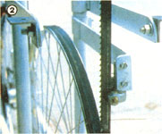

[2] The table and blade guide supports are just pieces of flat stock welded to short tabs on the frame collars. The factory-made guide shown here fastens to a shoulder mounted perpendicularly to the end of the support.